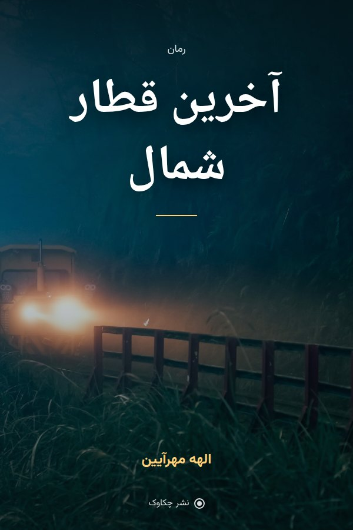
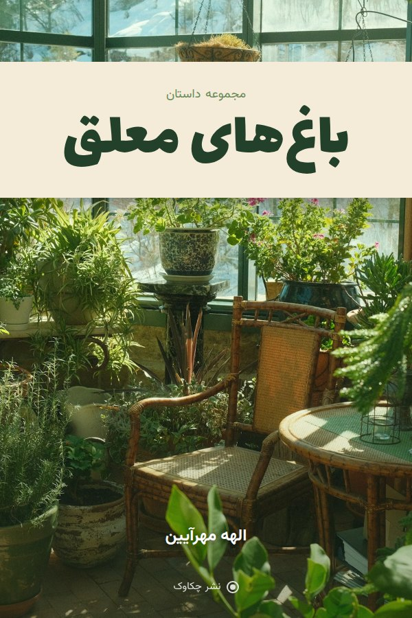
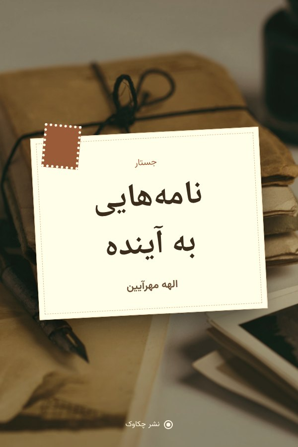
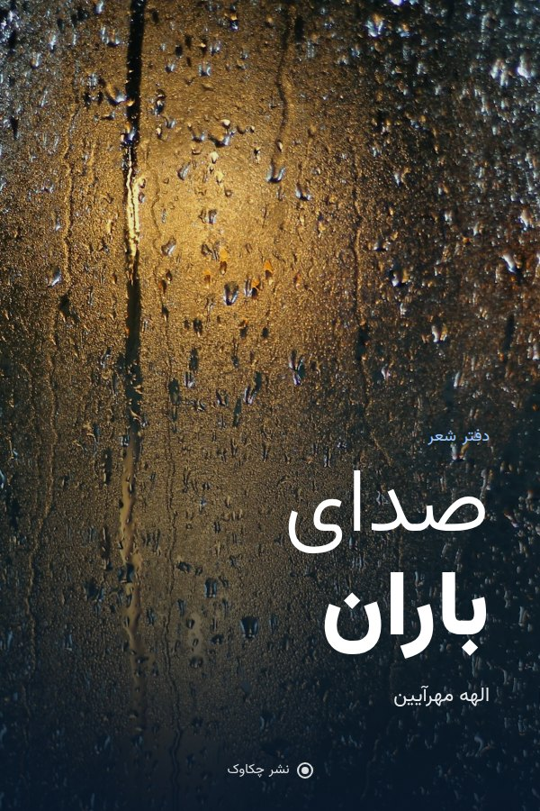
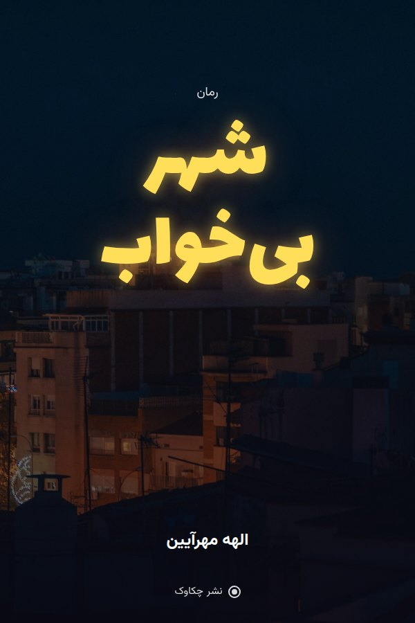
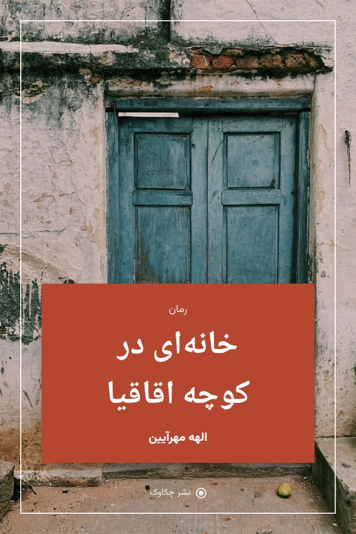
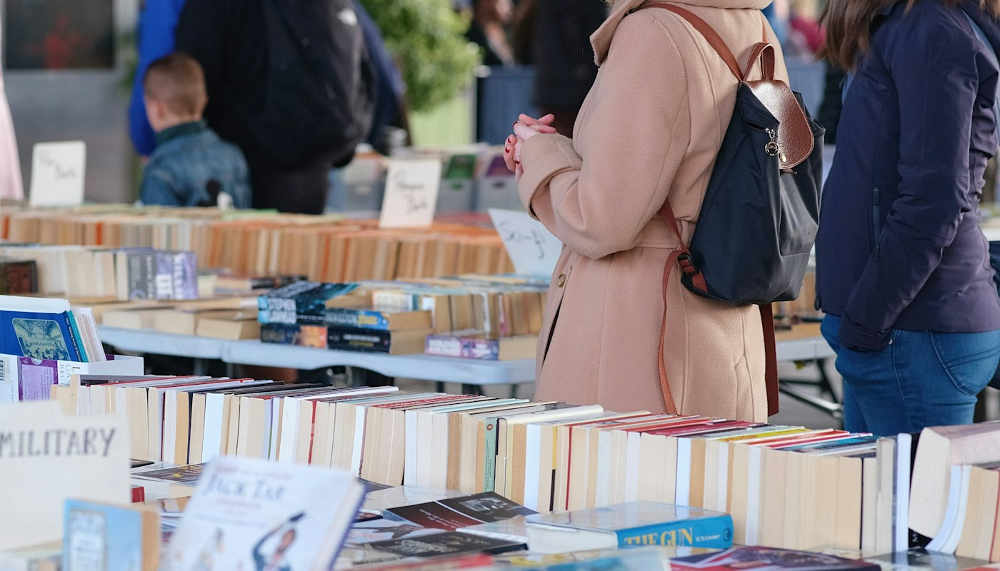

نویسنده، شاعر و جستارنویس
کلمهها
کلمهها
خانهی مناند
«مینویسم تا چیزهایی را که نمیشود گفت، بشود خواند.»
الهه مهرآیین هستم؛ نویسنده شش کتاب، برنده جایزه ادبی جلال آلاحمد و ستوننویس هفتهنامه کرگدن. در رمانهایم از آدمها، شهرها و چیزهایی مینویسم که گفتنشان سخت است.
- ۶کتاب منتشرشده
- ۳۸نوبت چاپ
- ۳زبان ترجمه


منتشر شد
تازهترین کتاب · پاییز ۱۴۰۴
آخرین قطار شمال
قطاری که هر شب ساعت یازده از تهران به شمال میرود و هفت مسافر که هر کدام رازی را با خود حمل میکنند. «آخرین قطار شمال» داستان فرار، بخشش و راههای رفتهای است که نمیشود برگشت.
«زمانی که نفس را در سینه حبس میکند و تا ایستگاه آخر رهایت نمیکند.»روزنامه شرق، صفحه کتاب
نسخه کاغذیکتاب الکترونیککتاب صوتی
کتابها
قفسه کتابهای من
همه کتابها از کتابفروشیهای سراسر کشور و وبسایت نشر چکاوک در دسترساند.

مجموعه داستان · ۱۴۰۲
باغهای معلق
یازده داستان از زنانی که در گلخانهها و آپارتمانها ریشه میدوانند.
چاپ چهارمسفارش

جستار · ۱۴۰۰
نامههایی به آینده
نامههایی به دخترم درباره نوشتن، خواندن و شجاعت؛ برنده جایزه جلال آلاحمد.
چاپ نهمسفارش


رمان · ۱۳۹۶
شهر بیخواب
روزنامهنگاری جوان که شبهای تهران را برای یک گزارش گمشده میگردد.
چاپ هشتمسفارش

رمان · ۱۳۹۴
خانهای در کوچه اقاقیا
اولین رمان؛ سه نسل از یک خانواده در خانهای قدیمی در رشت.
چاپ پنجمسفارش
از متن کتاب
فصل اول: ساعت یازده شب
ایستگاه راهآهن تهران آن شب بوی باران و چای کهنه میداد. مهتاب چمدانش را محکمتر گرفت و به تابلوی سبزی نگاه کرد که اسم شهرها رویش یکییکی روشن و خاموش میشدند. سالها بود که از این ایستگاه فرار کرده بود و حالا، درست وقتی فکر میکرد دیگر چیزی برای برگشتن نمانده، بلیت یکطرفهای در جیبش بود.
واگن شماره چهار هنوز خالی بود. روی صندلی کنار پنجره نشست و تا قطار راه افتاد، چشمهایش را بست. نمیدانست شش نفر دیگری که یکییکی وارد کوپه میشوند، هر کدام دلیلی دارند که امشب نباید به مقصد برسند.
زمان خواندن فصل کامل: ۱۸ دقیقهادامه فصل اول
۱۷سال نوشتن
درباره من
زندگی میان کتابها
متولد ۱۳۶۴ در رشت. کارشناسی ارشد ادبیات فارسی از دانشگاه تهران. نخستین داستانم را در ۱۹ سالگی در مجله «همشهری داستان» منتشر کردم و از آن روز نوشتن هرگز رهایم نکرده است.
آثارم به انگلیسی، ترکی و ایتالیایی ترجمه شدهاند. در کنار نوشتن، کارگاههای داستاننویسی برگزار میکنم و هر هفته ستونی در هفتهنامه کرگدن مینویسم.
- ۱۳۸۸انتشار اولین داستان کوتاه در مجله همشهری داستان
- ۱۳۹۴انتشار اولین رمان، «خانهای در کوچه اقاقیا»
- ۱۴۰۰جایزه ادبی جلال آلاحمد برای «نامههایی به آینده»
- ۱۴۰۳ترجمه «شهر بیخواب» به زبان ایتالیایی
جایزه جلال آلاحمد۱۴۰۰ · «نامههایی به آینده»
جایزه مهرگان ادب۱۳۹۷ · بهترین رمان اول
نامزد نهایی جایزه گلشیری۱۴۰۳ · «باغهای معلق»
ترجمه به سه زبانانگلیسی، ترکی و ایتالیایی



رویدادها
دیدار در رویدادها
برای امضای کتاب، کارگاهها و شبهای شعر، از همینجا ثبتنام کنید.
نقدها
منتقدان چه گفتهاند
شخصیتهای «آخرین قطار شمال» تا مدتها بعد از تمام شدن کتاب با آدم میمانند.

لیلا صادقی
نویسنده و مترجمیکی از خواندنیترین رمانهای سال؛ ساختاری هوشمندانه با پایانی غافلگیرکننده.

روزنامه اعتماد
صفحه کتابنامههای ماهانه
هر ماه یک نامه کوتاه: یک جستار تازه، کتابهایی که خواندهام و خبر رویدادها. بیش از ۸٬۰۰۰ مشترک.
تماس
برای گفتگو بنویسید
برای دعوت به رویداد، مصاحبه یا سفارش نسخه امضاشده.